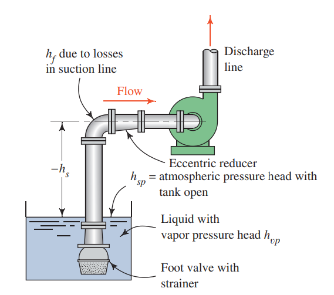

Determine the available NPSH for the system shown below. The fluid is water at 80°C and the atmospheric pressure is 101.8 kPa. The water level in the tank is 2.0 m below the pump inlet. The vertical leg of the suction line is a DN 80 Schedule 40 steel pipe, whereas the horizontal leg is a DN 50 Schedule 40 pipe, 1.5 m long. The elbow is of the long-radius type. Neglect the loss in the reducer. The foot valve and strainer are of the hinged disk type. The flow rate is 300 L/min.

To find the available NPSH we need to first calculate the pressure at the inlet of the pump. To do this we first setup the generalized energy equation with point 1 on the surface of the open tank and point 2 at the pump inlet.
$$
\frac{p_1}{\gamma}+z_1+\frac{v_1^2}{2g}+h_A-h_R-h_L=\frac{p_2}{\gamma}+z_2+\frac{v_2^2}{2g}
$$
In the above expression $p_1=0$ (gauge) since the tank is open to atmosphere. The velocity $v_1=0$ at the surface of a tank or reservoir. If we set our reference elevation to be at the fluid surface then $z_1=0$ and $z_2=2~\m$. Both $h_A$ and $h_R$ are zero since there are no pumps (there is a pump in the problem but no pump between points 1 and 2 that we chose) or motors.
$$
-h_L=\frac{p_2}{\gamma}+ 2~\m +\frac{v_2^2}{2g}
$$
The pressure head at the pump inlet is therefore
$$
\frac{p_2}{\gamma} = h_L - 2~\m - \frac{v_2^2}{2g}
$$
We now need to find the losses in the system between points 1 and 2. The losses include the following: Entrance loss, friction in the 2 m of vertical pipe, minor loss in the foot valve and elbow, friction in the 1.5 m of horizontal pipe.
The vertical pipe is DN 80 Schedule 40 and has an inside diameter $D=77.9~\mm$ and flow area $A=4769~\mm^2$.
The velocity and velocity head are
$$
v=\frac{Q}{A}=\frac{300~LPM}{60,000~\LPM/(m^3/s)}{A}=0.1~\m/\s.
$$